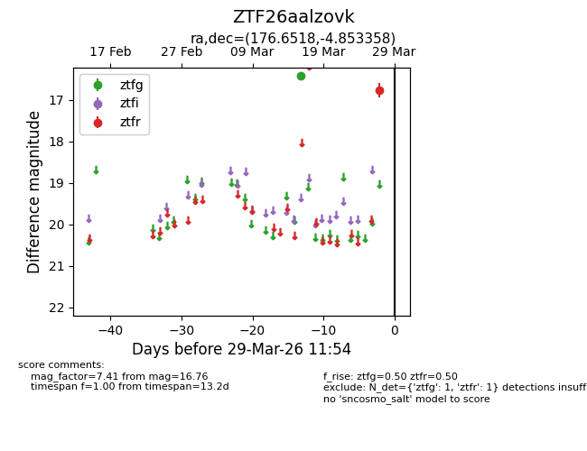
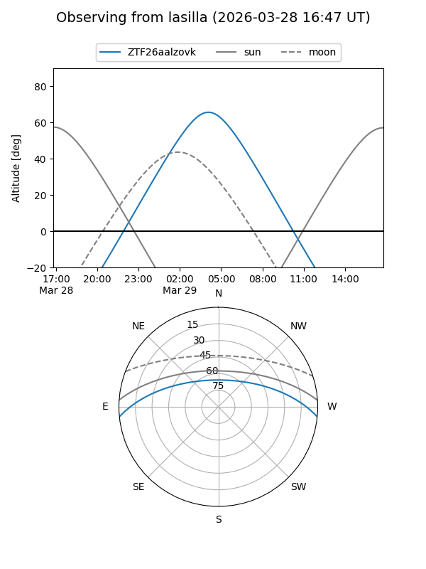
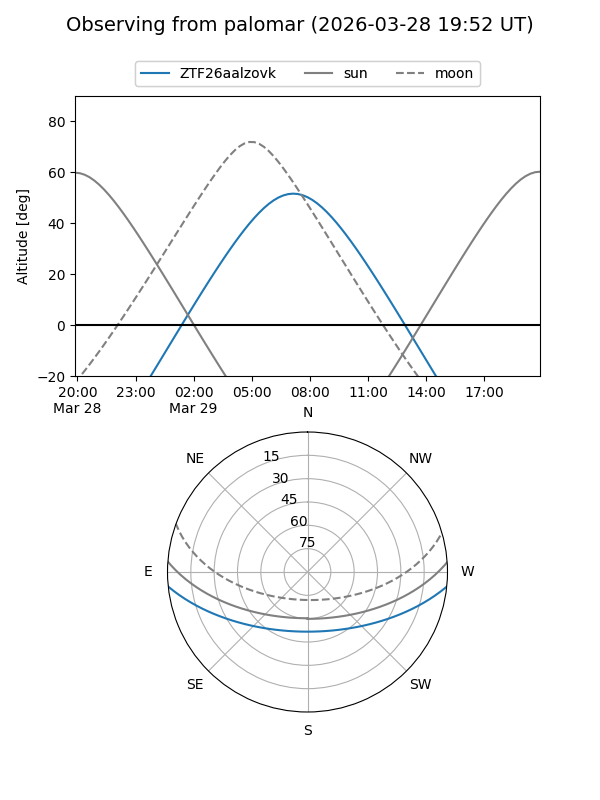

ZTF26aalzovk
Target ZTF26aalzovk at 2026-03-29 11:57
Aliases and brokers:
FINK: link
Lasair: link
ALeRCE: link
alt names
ZTF26aalzovk (ztf,fink_ztf)
Coordinates:
equatorial (ra, dec) = 176.6518,-4.85336
equatorial (HMS+DMS) = 11:46:36.43,-04:51:12.09
galactic (l, b) = (274.4018,+54.38747)
Flags:
Photometry:
last ztfg=16.42, ztfr=16.76
1 ztfg, 1 ztfr detections
Lightcurve

Visibility


Additional plots